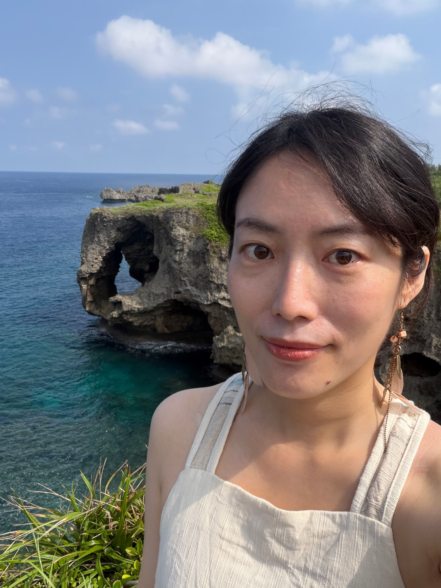

關於 Muna

這裡填寫您的第一段故事。例如：傾聽內心的聲音，尋找生命的方向。我是 Muna，一位熱愛靈性療癒與心靈陪伴的問路人。
在娜娜問路居，我們不只探討方向，更希望陪伴你在日常的喧囂中，重新找回靈魂最真實的溫度與平靜。
這裡填寫您的第二段介紹。例如：我們提供的服務涵蓋正念靜心引導、心靈諮詢以及各式靈性療癒課程。這裡是一個完全安全、包容且充滿正能量的隱密空間。
不論你正面臨人生的十字路口，或是純粹想給疲憊的自己一段靜心的時光，這裡永遠為你點著一盞燈。